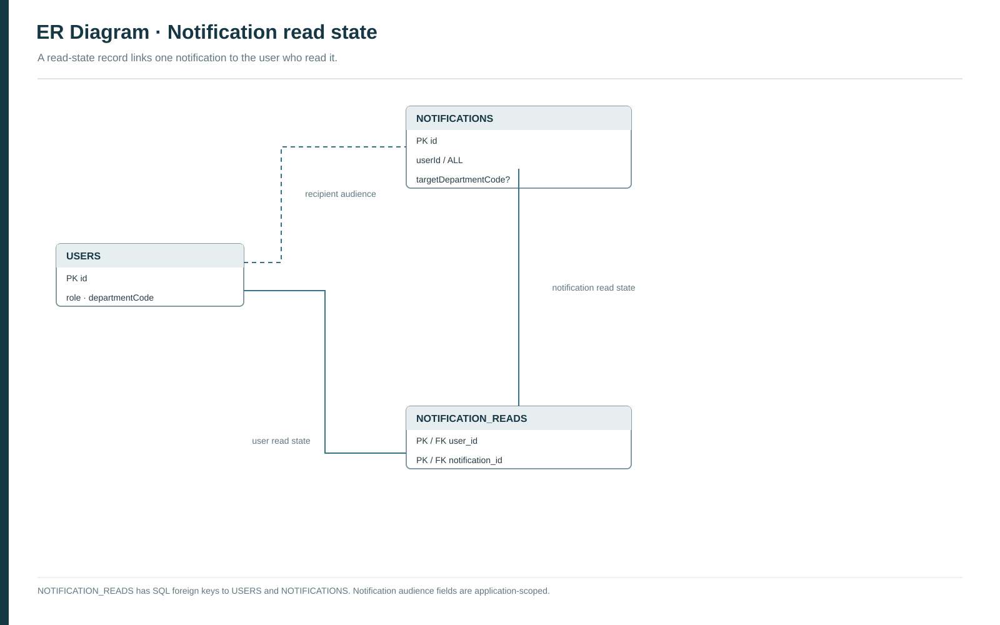

Figure 1. Core entity relationship diagram
Core campus records and their physical or logical relationships.

Six numbered report figures: two ER diagrams and DFD Levels 0–2. A supplementary notification ER diagram is included at the end.
Core campus records and their physical or logical relationships.
Academic records, faculty directory, calendar, career opportunities and facilities.

Campus users exchange information with CampusOne; the AI provider is optional.

Four main workflows and the data they read or update.

Faculty submission, authorized review and decision recording.

Eligibility, availability and transactional registration.

Optional supporting model for per-user notification read state.
